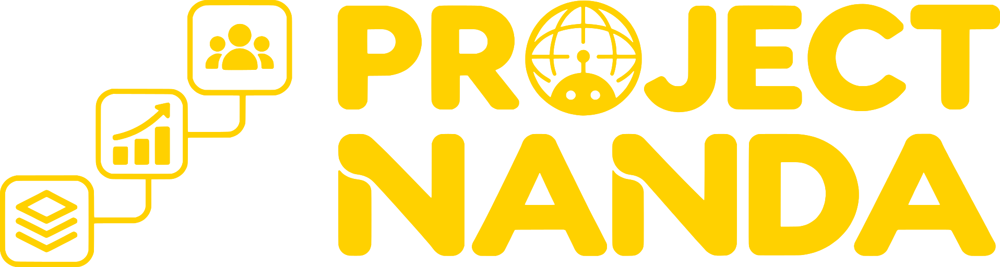

Logo downloads
Choose a mark that provides strong contrast against its background. SVG is preferred for web and print; PNG is best for slides and documents; PDF is suitable for professional print workflows.











Master vector files
Use these only when a production partner specifically needs the source artwork.


Use the brand with care
These basics keep Project NANDA recognizable across community chapters, events, presentations, repositories, and partner materials.
Do
- Use the supplied logo files without redrawing or rebuilding them.
- Choose the black, white, or yellow variant for clear contrast.
- Leave generous space around the mark and keep it legible.
- Credit Project NANDA and link to projectnanda.org where possible.
- Use the approved boilerplate below for event and partner descriptions.
Don't
- Stretch, rotate, recolor, crop, or add effects to the logo.
- Place the mark on busy or low-contrast imagery.
- Create a new Project NANDA logo or alter the wordmark.
- Present personal, chapter, or contributor views as official Project NANDA statements.
- Imply endorsement of an organization, product, or event without approval.
Project NANDA boilerplate
Use this approved description in event listings, chapter pages, partner introductions, and community materials.
About Project NANDA
Project NANDA is building the foundational infrastructure for the Open Agentic Web, an open ecosystem where autonomous AI agents can securely discover one another, verify capabilities, communicate, and collaborate across organizations and platforms.
Its work spans:
- Agent discovery and interoperability
- Trust, identity, and verification
- Agent-to-agent communication
- Mobile and edge AI agents
- Open standards for distributed intelligence
- Civic and sovereign AI
- Enterprise adoption of autonomous AI systems
The project is also developing NandaTown, an open developer sandbox where builders can experiment with real-world agent discovery, coordination, and orchestration.
Research: https://nanda.mit.edu
Open Source: https://projectnanda.org
For a short event description, use the opening paragraph. Use the complete boilerplate for partner or chapter pages.
Official channels
Use these links in chapter materials, event pages, and contributor profiles.